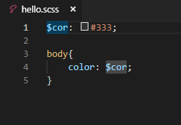
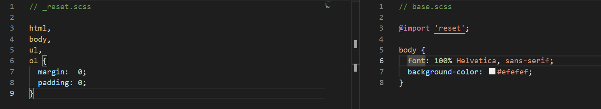
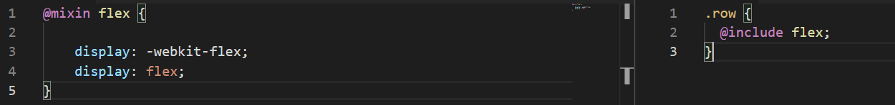
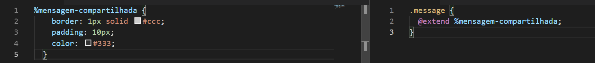

Tutorial SASS
O SASS foi criado com o objetivo de trazer para o css benefícios que ainda não existem na linguagem como: variáveis, aninhamento, mixins, herança, entre outros. Os arquivos SASS tem a extensão .SCSS
Após instalar o SASS (https://sass-lang.com/install), podemos começar a aproveitar suas vantagens:
Variáveis
No SASS você pode reutilizar informação, guardando-as em variáveis, para criar uma variável utilize o $ na frente do nome, por exemplo:
Aninhamento
É possível aninhar seletor para ter código hierárquico e visualmente mais fácil de entender:
Importação
O SASS combinará o arquivo que você quer importar com o arquivo de destino. Assim, você pode servir apenas um arquivo CSS para o navegador. Por exemplo: Digamos que você possua dois arquivos SASS: _reset.scss e base.scss e queira importar _reset.scss para base.scss (note que não precisamos colocar o .scss depois do nome de arquivo, nem o “_”). 
Mixins
Um mixin permite a reutilização de grupos de declarações CSS, por exemplo: Declaramos o mixin com @mixin e depois o utilizamos com @include.
Herança
Herança permite o compartilhamento de um conjunto de propriedades CSS de um seletor para outro, ajudando a manter seu SASS adequado ao conceito DRY(Don’t Repeat Yourself). Para isso é necessário criar uma classe placeholder, que só é impressa quando é herdada. Caso a %mensagem-compartilhada não fosse utilizada, ela não seria impressa no .CSS resultado da compilação. 
Operadores
Com os operadores é possível realizar operações matemáticas como +, -, *, / e %. Por exemplo: